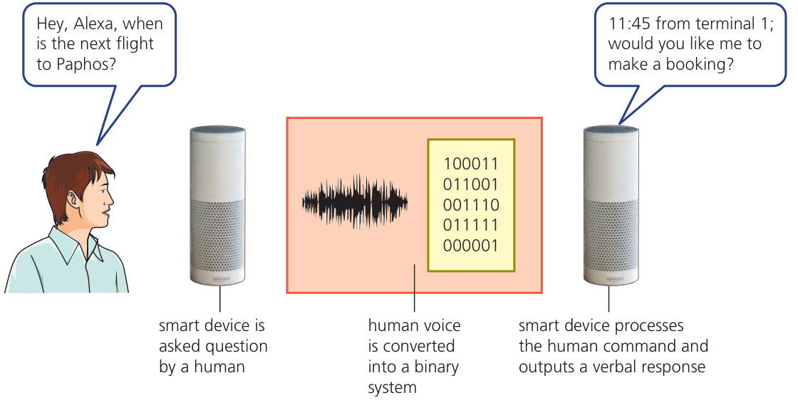
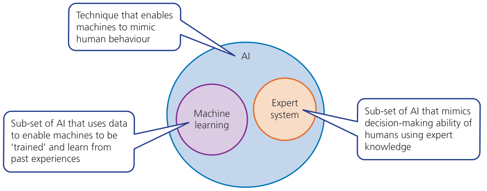
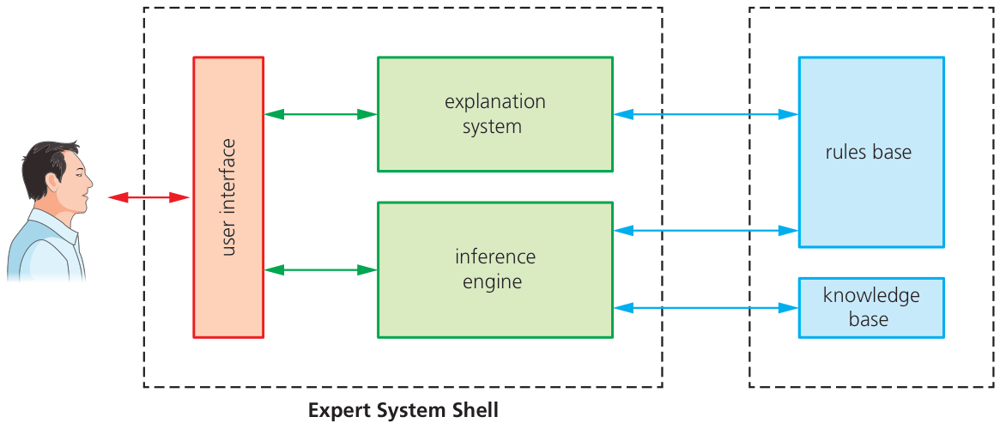
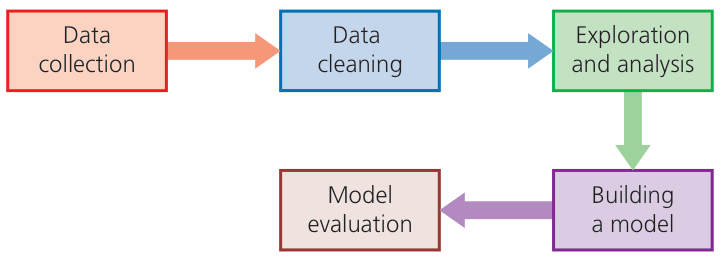
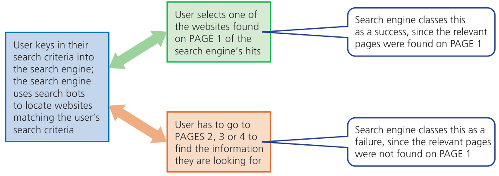

← → Flip slides · F Full screen · Esc Exit full screen
6.3 · Overview · 01
Artificial intelligence
Computer systems can simulate intelligent behaviour.
Syllabus 6.3: expert systems and machine learning.

Hodder p.242, Figure 6.21
Check your understanding
Which part of this example involves interpreting data?
Show model answer
The system processes the spoken request and determines a suitable response.
Teacher notes / 教师提示
Students explain their reasoning before opening the model answer. Accept equivalent precise wording.
Source: Syllabus 6.3. Hodder pp.241–243. Cambridge pp.136–137. Original teaching questions and model answers are not official mark schemes.
6.3 · Characteristics · 02
Characteristics of AI
An AI system collects data and uses rules or processes to work with it.
Reasoning uses available information to reach conclusions.
Some AI systems can learn and adapt, but learning is not required in every AI system.
Check your understanding
Does a rule-based expert system have to learn automatically?
Show model answer
No. It can simulate expert reasoning using facts and rules supplied by people.
Teacher notes / 教师提示
Students explain their reasoning before opening the model answer. Accept equivalent precise wording.
Source: Syllabus 6.3, objectives 1–2. Cambridge p.137. Original teaching questions and model answers are not official mark schemes.
6.3 · Applications · 03
AI tasks and their data
The data must be relevant to the task the system performs.
Task
Input data
Possible output
Speech recognition
Recorded speech
Recognised words
Image recognition
Image pixels
An object label
Fault diagnosis
Observed symptoms
A likely cause or next check
Spam detection
Message features
Spam or legitimate
Check your understanding
What data could help a system identify a spoken command?
Show model answer
An audio recording or digital representation of the speech, together with processes trained or programmed to recognise words.
Teacher notes / 教师提示
Students explain their reasoning before opening the model answer. Accept equivalent precise wording.
Source: Cambridge pp.136–137. Hodder pp.243,247. Original teaching questions and model answers are not official mark schemes.
6.3 · AI systems · 04
Expert systems and machine learning
Both are within the scope of AI in this syllabus.
An expert system applies specialist knowledge and rules.
Machine learning adapts processes or data using experience or examples.

Hodder p.246, Figure 6.25
Check your understanding
Which approach can update its model from training examples?
Show model answer
Machine learning.
Teacher notes / 教师提示
Students explain their reasoning before opening the model answer. Accept equivalent precise wording.
Source: Hodder p.246, Figure 6.25. Syllabus 6.3. Original teaching questions and model answers are not official mark schemes.
6.3 · Expert systems · 05
The four expert-system components
An expert system simulates the decisions of an expert in a specific subject.
Component
Role
Knowledge base
Stores specialist facts and knowledge
Rule base
Stores rules that link facts to conclusions
Inference engine
Applies rules to available facts and user input
Interface
Accepts input and presents questions or conclusions
Check your understanding
Which component applies the rules?
Show model answer
The inference engine.
Teacher notes / 教师提示
Students explain their reasoning before opening the model answer. Accept equivalent precise wording.
Source: Syllabus 6.3. Hodder pp.244–245. Cambridge p.139. Original teaching questions and model answers are not official mark schemes.
6.3 · Expert-system structure · 06
How the components interact
The interface collects the user’s answers.
The inference engine uses the knowledge and rules to choose the next question or conclusion.
The diagram also shows an explanation system, which is outside the required component list.

Hodder p.244, Figure 6.23
Check your understanding
Which two stored resources does the inference engine use?
Show model answer
The knowledge base and the rule base.
Teacher notes / 教师提示
Students explain their reasoning before opening the model answer. Accept equivalent precise wording.
Source: Hodder p.244, Figure 6.23. Syllabus 6.3 lists four required components. Original teaching questions and model answers are not official mark schemes.
6.3 · Worked example · 07
Printer diagnosis: information and rules
This original classroom system diagnoses a printer that will not print.
Item
Example
User input
Power light on, paper warning on
Stored fact
The paper warning indicates a paper supply problem
Rule
IF paper warning is on THEN check the paper tray
Conclusion
Load paper if the tray is empty, then test again
Check your understanding
Is “the paper tray is empty” a fact or a rule?
Show model answer
A fact. A rule links a condition such as an empty tray to an action such as loading paper.
Teacher notes / 教师提示
Students explain their reasoning before opening the model answer. Accept equivalent precise wording.
Source: Original example based on Cambridge p.139. Original teaching questions and model answers are not official mark schemes.
6.3 · Rule trace · 08
Tracing an inference
The engine applies the rule whose conditions match the known facts.
A new answer may determine the next question.
Rule
Condition
Suggested action
1
Power light off
Check the power connection
2
Power on AND tray empty
Load paper
3
Power on AND tray has paper
Check for a paper jam
Check your understanding
Power is on and the tray is empty. Which rule applies?
Show model answer
Rule 2. The system suggests loading paper. It should then check whether the printer works.
Teacher notes / 教师提示
Students explain their reasoning before opening the model answer. Accept equivalent precise wording.
Source: Original simplified classroom rules, not a complete diagnostic system. Original teaching questions and model answers are not official mark schemes.
6.3 · Development · 09
Building an expert system
Experts provide reliable knowledge about a specific subject.
Developers express the reasoning as rules and create an interface.
Testing compares the system’s conclusions with known cases, then corrects faults.
Check your understanding
Why should experts review the rules after an update?
Show model answer
An incorrect or outdated rule can lead the inference engine to a wrong conclusion.
Teacher notes / 教师提示
Ask students to add one new printer symptom and a rule. Use a known case to test the rule.
Source: Hodder p.245. Original teaching questions and model answers are not official mark schemes.
6.3 · Evaluation · 10
Limits of expert systems
The same input and rules can give consistent advice.
Wrong input, missing facts or outdated rules can produce a poor conclusion.
The system works within the knowledge and rules available to it.
Check your understanding
Why should a user question a surprising result?
Show model answer
The result depends on the entered data and the stored knowledge and rules. They may be incomplete or incorrect.
Teacher notes / 教师提示
Students explain their reasoning before opening the model answer. Accept equivalent precise wording.
Source: Hodder pp.243–244. Original explanation avoids assuming systems are always accurate or unbiased. Original teaching questions and model answers are not official mark schemes.
6.3 · Machine learning · 11
Machine learning
A machine-learning program can automatically adapt its processes or data.
Training examples help a model learn patterns.
Evaluation checks how well it performs on suitable data.

Hodder p.248, Figure 6.27
Check your understanding
What changes during learning?
Show model answer
The model’s stored data, parameters or processing behaviour changes as a result of training or experience.
Teacher notes / 教师提示
Students explain their reasoning before opening the model answer. Accept equivalent precise wording.
Source: Syllabus 6.3. Hodder pp.247–248. Cambridge pp.137–138. Original teaching questions and model answers are not official mark schemes.
6.3 · Worked example · 12
Learning to identify spam
A training set contains examples of legitimate and spam email.
The system learns useful patterns in message features.
Stage
Spam-filter example
Collect
Gather representative examples with known categories
Train
Learn patterns in content and message information
Test
Classify different examples and compare with known labels
Improve
Use suitable new examples to address errors
Check your understanding
Why is a hand-written list of blocked words alone insufficient evidence of learning?
Show model answer
A fixed list may only apply rules. Learning requires the program to adapt its processes or data using examples or experience.
Teacher notes / 教师提示
Students explain their reasoning before opening the model answer. Accept equivalent precise wording.
Source: Hodder p.247. Original stage summary. Original teaching questions and model answers are not official mark schemes.
6.3 · Testing · 13
Unseen data and mistakes
A model must work on new inputs, not only the examples used for training.
Training data that misses important cases can produce poor predictions.
Message
Correct category
Possible mistake
Normal school announcement
Legitimate
Wrongly sent to spam
A deceptive prize message
Spam
Wrongly left in the inbox
A new type of message
Depends on its content
Model may need better examples
Check your understanding
Why can a filter make mistakes even after training?
Show model answer
Training examples may be limited, data may be misleading, and new messages may differ from the patterns it learned.
Teacher notes / 教师提示
The correct labels in this table are teaching assumptions. Discuss the costs of the two types of error without introducing unnecessary technical terminology.
Source: Original examples applying syllabus 6.3 and Hodder pp.247–248. Original teaching questions and model answers are not official mark schemes.
6.3 · Comparison · 14
Expert rules and learning compared
The distinction concerns how the system uses and changes knowledge.
Aspect
Conventional expert system
Machine learning
Knowledge
Experts supply facts and rules
Model learns patterns from data
Main process
Apply rules to facts and input
Use learned patterns on new input
Improvement
People update facts and rules
Training adapts the model
Shared limitation
Poor knowledge can mislead
Poor training data can mislead
Check your understanding
Does every expert system automatically improve after each use?
Show model answer
No. A conventional expert system usually needs people to update its facts and rules.
Teacher notes / 教师提示
Students explain their reasoning before opening the model answer. Accept equivalent precise wording.
Source: Syllabus 6.3. Cambridge pp.137–139. Hodder pp.243–248. Original teaching questions and model answers are not official mark schemes.
6.3 · Learning from feedback · 15
Feedback can help a model adapt
The textbook shows a simplified search-engine example.
User choices can provide feedback about the results.
A click is only a signal. It does not prove that a page answered the question correctly.

Hodder p.247, Figure 6.26
Check your understanding
What further evidence could improve the feedback?
Show model answer
For example, whether the user found the information useful. No single signal guarantees relevance.
Teacher notes / 教师提示
Students explain their reasoning before opening the model answer. Accept equivalent precise wording.
Source: Hodder p.247, Figure 6.26. Qualification and check are original teaching commentary. Original teaching questions and model answers are not official mark schemes.
6.3 · Review · 16
Exit check
Name all four components of an expert system and state each role.
Explain machine learning using the spam-filter example.
Describe one way poor data could lead to a wrong conclusion.
Check your understanding
What is the main difference between inference and learning?
Show model answer
Inference uses available knowledge or a learned model to reach a conclusion. Learning changes the model’s processes or data using examples or experience.
Teacher notes / 教师提示
Keep the lesson at syllabus level. Neural-network architecture and the explanation system are extension material rather than required content.
Source: Syllabus 6.3. Original retrieval question and model answer. Original teaching questions and model answers are not official mark schemes.
Sources and practice
Content follows the supplied Cambridge IGCSE Computer Science 0478 syllabus for 2026–2028, Version 6, section 6.3. Textbook images retain their source credits. Questions and model answers are original teaching material.